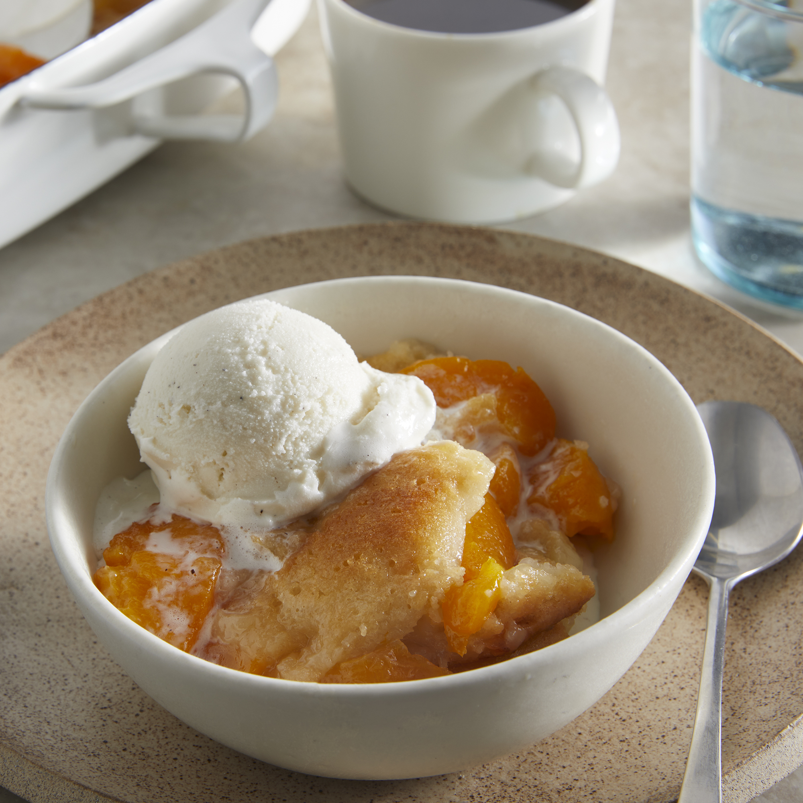

< back to home
Peach Cobbler🍑

Description
An easy peach cobbler made with just 5 common ingredients you probably always have on hand? That's right! This simple dessert comes together in minutes and bakes to sweet perfection in a cast iron skillet. Serve warm with vanilla ice cream and whipped cream.
Ingredients
- 0.5 cup unsalted butter, melted
- 1 cup self-rising flour
- 1 cup white sugar
- 1 cup milk
- 2 16-ounce cans of sliced peaches in heavy syrup
Directions
- Preheat the oven to 350 degrees F (175 degrees C).
- Mix self-rising flour, sugar, and milk together in a bowl until well combined and no lumps remain.
- Pour melted butter into a 9- or 10-inch cast iron skillet. Pour flour-milk mixture over top.
- Carefully pour peaches and syrup into the skillet. Use a spatula to spread peaches evenly around the pan.
- Bake in the preheated oven until the crust turns golden brown, 30 to 45 minutes.
- Remove from the oven and let cool for about 10 minutes before serving.